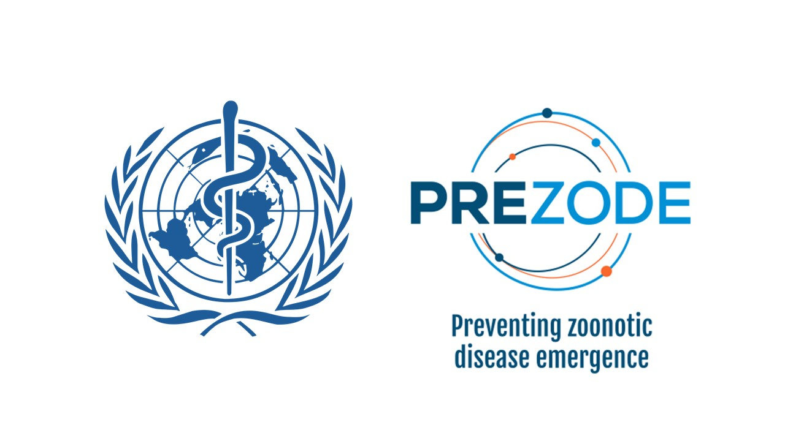

Basic instructions (full information note available here):
(1) Click on one country at the time.
(2) Choose the pathogen of interest
(3) According to your expertise, indicate your estimation (for the geographical unit and the pathogen selected) of pathogen circulation in wildlife, contact between wildlife and humans, pathogen circulation in livestock, contact between livestock and humans, contact between wildlife and livestock and your confidence for each estimation
N.B (1): If you have a relevant estimation to provide on one pathogen in one country, but not for all the variables (e.g., relevant estimation for pathogen circulation in wildlife, but not for the rest of variables), please indicate "Don't know" for these other variables
N.B (2): If you made a mistake with your estimation, please resubmit a new estimation for the same combination of pathogen/country (only the last record will be considered)
For any questions, please e-mail Benjamin Roche